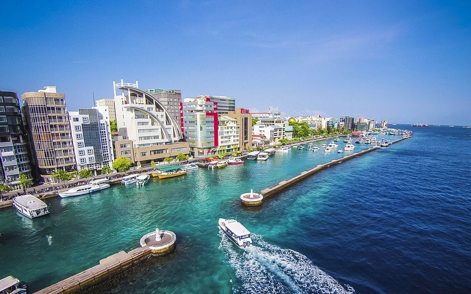
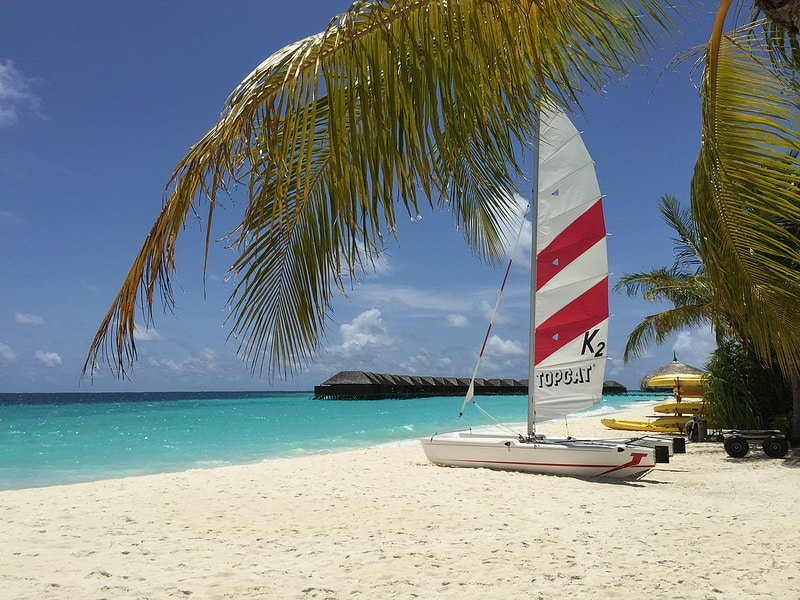
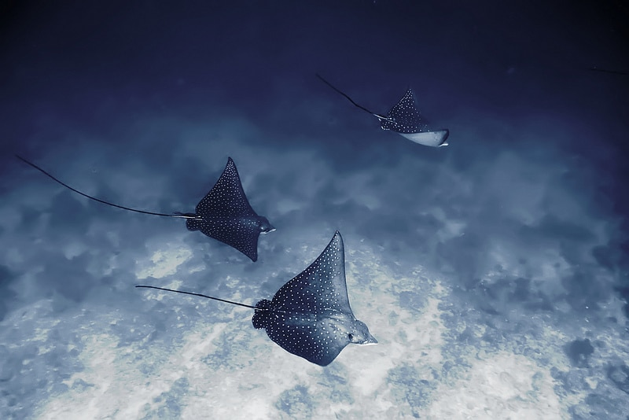
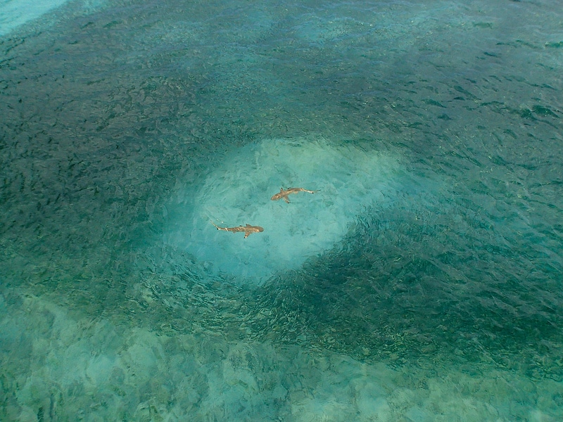

Malé
Besoin d’une évasion qui ne soit pas fiscale ?
Malé se trouve sur une île homonyme, dans l’atoll de Kaafu et représente le centre politique, culturel, économique et financier du pays.Localisée à une latitude de 4° nord, le climat de la ville est équatorial.
Dans la ville de Malé, le Musée National, dans le Sultan’s Park, est une visite incontournable. Il abrite des collections de la période bouddhiste et islamique du pays, avec des vêtements et des bijoux, des armes et des tambours.
La ville comprend de nombreux hôtels où dormir et est parsemée, entre les mosquées, d’espaces verts où flâner. Pour une visite commémorative, allez au sud-ouest, au Monument du Tsunami (2004).

L’atoll de Véligandu
Que faire aux Maldives sinon se prélasser sur les plages sublimes des îles équatoriales et tropicales ?
Eaux turquoises, chaudes toute l’année, mouillant du sable fin et au pied d’une végétation tropicale luxuriante : les Maldives sont une invitation du voyage.
Pour profiter des meilleures plages des Maldives, allez à Véligandu, la plage emblématique des Maldives, avec des bungalows bâtis sur pilotis où dormir les pieds dans un lagon bleu paisible.
Magnifique île si on apprécie la quiétude, la beauté, se baigner dans des eaux chaudes et bronzer sur un sable très fin. On peut y faire de la plongée sous-marine ou simplement… du farniente. Les hôtels où se loger à Alimatha eux, séduiront tous les publics.

L’île Mudhdhoo
Il existe un phénomène rare, unique au monde, que l’on retrouve aux Maldives, au nord de Malé,
sur l’île Mudhdhoo : à la nuit tombée, en raison d’un organe bioluminescent activé comme stratégie de défense par des milliers de minuscules crustacés présents sur le sable,
la plage s’illumine au crépuscule. Alors que faire aux Maldives ? Voir les plages de l’île Mudhdhoo est une activité immanquable des Maldives, et assez insolite ! C’est devenu une attraction touristique majeure sur l’archipel en raison de son caractère unique.
Au grès d’une baignade, profitez notamment de la faune marine exceptionnelle qui promet un spectacle… magique.

Nager avec les requins
Visiter les Maldives sans voir les requins-baleines et les raies-manta serait dommage.
Aux Maldives, plonger avec ces animaux marins est une pratique très répandue parmi les activités touristiques vendues par les resorts de plage.
Un extraordinaire univers aquatique vous attend, dans un élément que l’on ne maîtrise pas : l’océan.
On y retrouvera une population abondante de raies-manta, des poissons tropicaux multicolores et entre novembre et avril, l’impressionnant requin-baleine.
Plonger dans l’océan à 15-20 mètres de profondeur permet de traverser les coraux, d’approcher les récifs pour se trouver proche des murènes, de poissons-perroquets, des raies et des mérous : un gigantesque aquarium sauf qu’ici, c’est vous l’étranger…